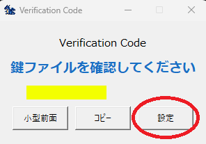
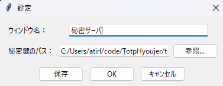
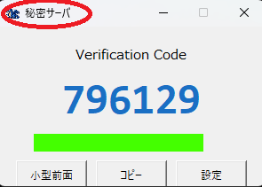

ログインに使用するQRコードを用意し、テキスト化してください。
QRコードのテキスト化は、QRコードをwebツールにアップロードしても変換可能ですが、秘密鍵ファイルですので、QrDecoderなどオフラインでの変換を推奨します。
https://github.com/atirl/QrDecoder
READMEに従って本アプリケーションを起動してください。

初期状態では、鍵が設定されていないため上記のような画面になります。
赤○の [設定] ボタンをクリックしてください。

ウインドウ名： 接続先の名前を入れると分かりやすいです。
秘密鍵のパス： 秘密鍵のファイルを指定してください。
[保存]ボタンで、当ツール(TotpHyoujer.pyまたはTotpHyoujer.exe)と同じフォルダに config.txt として保存して設定画面を終了します。
保存せずに今回の起動に反映させたい場合は[OK]ボタンを押下してください。

上記のように6桁のコードが表示され、ウインドウタイトルが赤○で囲ったように変更されます。
以上で初期設定は完了です。
次回起動時から同じフォルダにある config.txt が自動的に読み込まれます。
複数の接続先を表示させたい場合は、フォルダごとコピーして別フォルダで新たなコンフィグを設定してください。